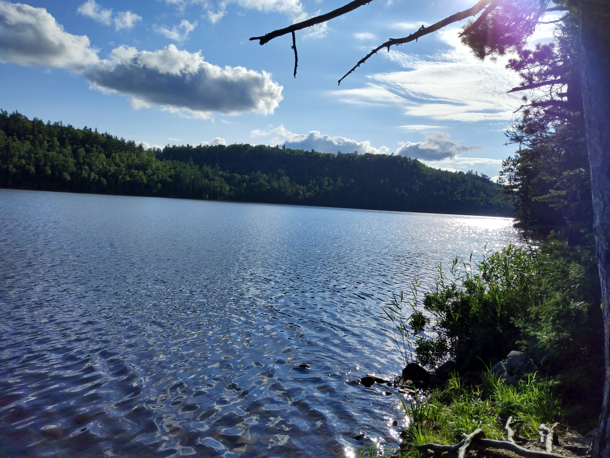

Getting to the Lake
There are two ways to access East Pike Lake. The most direct is through the John Lake entry point, #69. From this entry point it is an easy paddle across John Lake and then a challenging 210 rod portage to the eastern side.
The other route is from Entry Point #68, Pine Lake. Paddlers cross Pine Lake east to west and then must portage 444 rods to reach the west side.

Geology
East Pike Lake lies just south of Mountain Lake, and while the mountains are Minnesotan in size, they make for dramatic scenery.
The area experienced a large volcanic eruption around a billion years ago. In recent times, glaciers shaped the hills and valleys of East Pike Lake and much of the Boundary Waters. Granite, gneiss, and basalt can be found almost everywhere.
Fishing
East Pike Lake is aptly named, not only because it is located east of West Pike Lake. There are many pike!

Many anglers catch large northern pike around the lake. Be careful - loons will often try to steal your catch. This fish was filleted and cooked lakeside for a delicious lunch.

Sunsets
The best way to end your day on East Pike Lake is with a sunset. There are four campsites on the lake, and the best sunset can be found while camping on the far east side, looking west.

Consider East Pike Lake for your next Boundary Waters destination!